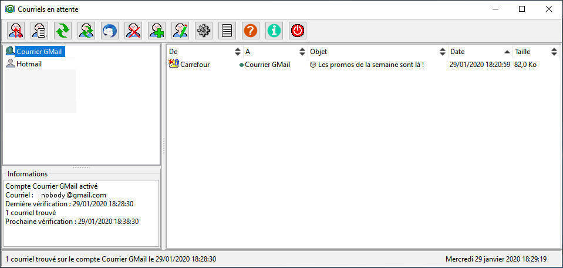

Courriels en attente
Vérification des boîtes mail POP3 et IMAP
Click for EnglishTélécharger
la dernière version
OBJET
Vérification périodique des courriels sur les boîtes POP3 et IMAP. Ce programme remplace MailAttente qui est obsolète.
Cliquer sur les boutons de cette image pour obtenir la description de son action.
INSTALLATION
Extraire l'archive et exécuter InstallMailsInBox.exe, puis suivre les instructions du programme d'installation.UTILISATION
Dans des conditions normales, Courriels en attente peut être minimisé dans la zone de notification. Il ne peut être fermé que par un clic doit sur son icone et le menu Quitte, ou dans sa fenêtre principale avec un double clic sur le bouton Quitte.Par défaut, l'interface standard de "Courriels en attente" est une barre de boutons. La taille des boutons peut être réduite dans les préférences du programme.
Pour afficher un menu, placer le curseur de la souris dans la barre de boutons et cliquer sur le bouton droit, puis sélectionner "Afficher le menu".

Importation de comptes
Permet l'importation de comptes de notre précédent programme "MailAttente", ou importer des comptes "Outlook" (2007-2013) et "Thunderbird".
Le programme retrouve automatiquement les comptes disponibles dans ces applications. Sélectionner le type de compte dans la liste à gauche, le ou les comptes à importer.
Les données utiles du compte sélectionné s'affichent dans la liste à droite.
Cliquer ensuite sur le bouton "OK" pour valider l'importation ou "Annuler" pour y renoncer.
Dans le cas d'"Outlook" et de "Thunderbird", les mots de passe ne sont pas importés et vous devez les mettre à jour en éditant le(s) compte(s) correspondant(s).

Affiche
le journal d'activité du compte
Selon les options générales du programme, il est possible de sauvegarder le journal, le journal d'activité courant s'ajoutant à celui enregistré précédemment.
Vérifie les boîtes de courriel de
tous les comptes actifs
Pour rendre un compte de courriel actif ou inactif, il faut cocher la
case correspondante lors de la création ou la
modification
d'un compte de courriel.
Si ce client courrier est connu du programme, l'icone de ce client courrier peut figurer sur ce bouton. Par exemple, Google Mail, Thunderbird, Windows Mail, Outlook.

Supprime
le compte sélectionné
Une
confirmation est demandée, cette opération est irréversible (enfin
presque, une sauvegarde de la dernière liste de comptes existe dans le
dossier utilisateur de Courriels en attente). 
Ajoute
un nouveau compte à vérifier
Compléter les différents champs de cette boîte de dialogue. Les paramètres adéquats sont donnés par le fournisseur du service de courrier.
Les protocoles acceptés par le programme sont POP3 et IMAP.
Les mots de passe sont stockés chiffrés dans le fichier de configuration du programme.
Eviter de choisir un intervalle trop faible entre chaque vérification, le risque étant de voir le fournisseur du serv ice bloquer le compte de courriel. Une valeur raisonnable est 10 minutes si le compte reçoit beaucoup de courriels, 20 minutes ou même plus pour un compte peu actif.
Modifie
le compte sélectionné
La boîte de dialogue est
similaire à celle de l'ajout d'un nouveau compte. Les champs sont
préremplis avec les paramètres enregistrés du compte.
Ouvre
la fenêtre de
modification
des options générales de Courriels en attente.
Lancer au démarrage du système:
cette option permet de vérifier automatiquement les boîtes de courriel
dès le démarrage du système. Dans tous les cas, lors de l'arrêt dus
système, la configuration en cours est sauvegardée.Démarrage minimisé: La fenêtre principale du programme ne s'affiche pas au démarrage. Pour l'afficher, cliquer simplement sur son icone dans la barre des tâches ou dans la zone de notification.
Sauvegarder taille et position de la fenêtre: La taille de la fenêtre, les dimensions des volets, la largeur des colonnes sont sauvegardées à la fermeture du programme.
Minimiser au lancement du client Courrier: La fenêtre est réduite en icone lorsque l'on clique sur le bouton de lancement du client Courrier.
Restaurer la fenêtre si nouveaux messages: Lors de l'arrivée de nouveaux messages, la fenêtre du programme apparaît à l'écran.
Masquer l'icône dans la barre des tâches: Lorsque le programme est minimisé, l'icône dans la barre des tâches n'est pas affichée. Cliquer avec le bouton gauche de la souris pour afficher la fenêtre du programme et avec le bouton droit de la souris pour afficher un menu des commandes essentielles.
Ne pas rechercher de mise à jour: Utiliser lorsque la machine de dispose pas de connexion Internet ou lorsque l'abonnement limite la quantité de données. Lorsque cette case est cochée, le programme recherche automatiquement une éventuelle mise à jour tous les 7 jours.
Conserver le journal du compte: Par défaut, le journal d'activité n'est conservé que jusqu'à la session suivante. En sélectionnant cette option, il est possible de sauvegarder le journal, le journal d'activité courant s'ajoutant à celui enregistré précédemment.
Ne pas afficher l'alerte d'arrêt du programme: Par défaut, une boîte d'alerte est affichée lors d'un clic sur le bouton d'arrêt du programme. Cocher la case dans cette boîte d'alerte ou dans ce dialogue pour ne plus afficher cette alerte. Il faut alors un double clic sur le bouton "Quitter Courriels en attente" pour quitter le programme.
Ne pas afficher l'alerte de masquage de la fenêtre: Par défaut, une boîte d'alerte est affichée lorsque l'on tente de fermer le programme en utilisant les contrôles de fermeture du système ((boutons ou menu dans la barre de titre, icône dans la barre des tâches). Cocher la case dans cette boîte d'alerte ou dans ce dialogue pour ne plus afficher cette alerte.
Activer les notifications: Par défaut, les notifications du programme au système ne sont pas activées. Cocher cette case pour que l'arrivée de nouveaux courriels apparaissent dans la zone de notifications.
Afficher les messages de tous les comptes: Par défaut, les courriels du compte sélectionné sont affichés dans la liste des courriels. Activer cette option pour afficher l'ensemble des messages en attente.


Affiche
la boite de dialogue A propos
Cliquer sur "Recherche de mise à jour" pour savoir si une nouvelle version de Courriels en attente" est disponible.
Cliquer sur "Web site" pour visiter le site de l'auteur du programme.
Quitte Courriels en attente
Par défaut, une boîte d'alerte
est affichée lors d'un clic sur ce
bouton. Cocher la case dans cette boîte d'alerte
ou dans ce dialogue pour ne plus afficher cette alerte. Il faut alors
un double clic sur ce bouton pour quitter le programme.
Masque
le programme avec les contrôles de
fermeture du système
C'est à dire l'icône en haut à
droite de la barre de titre de la fenêtre de Courriels en attente, le
menu système en haut et à gauche de la barre de titre du programme ou
le menu déroulant de l'icône du programme dans la barre des tâches.Lors de l'utilisation d'un de ces contrôles, le programme en se ferme pas mais est minimisé.
Par défaut, une boîte d'alerte est affichée. Cocher la case dans cette boîte d'alerte ou dans ce dialogue pour ne plus afficher cette alerte.
DESINSTALLATION
NOTICE
Utilisez Courriels en attente à vos risques et périls. Attention, l'effacement d'un message sur le serveur est irréversible.
Licence OpenSSL http://www.openssl.org .
Les marques et logos Outlook, Windows sont la propriété de Microsoft. La marque et le logo Thunderbird sont la propriété de Mozilla. La marque et le logo Gmail sont la propriété de Google. Ils sont utilisés par le programme dans un but d'information sur le client mail utilisé par le système.
Sources (Windows et Linux) disponibles à https://github.com/bb84000/